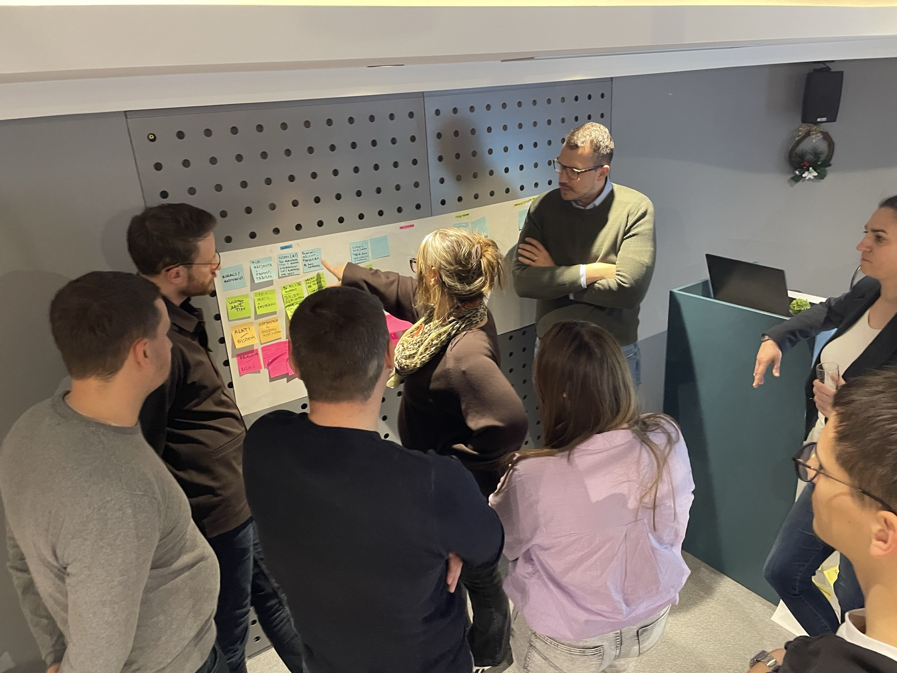
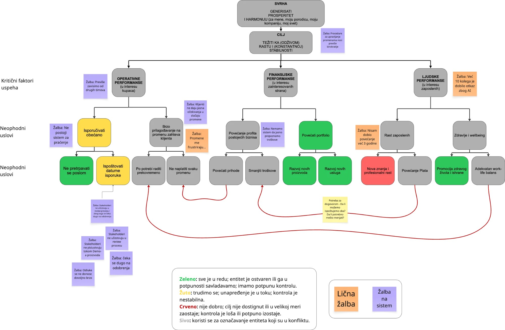

Otkrij gde gubiš vreme, kapacitet i novac.
Mapa uskih grla je radionica na kojoj sa tobom i tvojim timom mapiramo ceo tok posla, od prvog upita do preporuke. Posle nje dobijaš Plan rasta za narednih 6 do 9 meseci: jedno usko grlo, tri prioriteta i spisak onoga što sada ne radiš.
Pre radionice razgovaramo 30 minuta, da vidimo da li ima smisla za tvoj biznis.

Svi u firmi znaju da nešto ne radi. Retko ko zna šta tačno.
Vlasnik misli da je problem u ljudima. Tim misli da je problem u klijentima. Klijenti misle da je firma spora. Dok se ceo tok ne vidi na jednom mestu, svako popravlja svoj deo, a posao i dalje čeka na istim mestima.
Na radionici to postaje vidljivo za jedan dan. Vidi se koliko traje svaki korak, koliko posao stoji između koraka i koliko toga prolazi kroz tebe. Kad se to vidi, odluka šta raditi prvo postaje mnogo lakša.
Tri koraka do Plana rasta
Priprema
Ti i tvoj tim popunjavate kratak upitnik. Svako dobije priliku da kaže šta mu smeta, pre nego što ste svi u istoj sobi. Skupljamo brojke koje već imaš: broj klijenata, trajanje isporuke, dorade.
Radionica
Mapiramo korake, uloge, alate i probleme. Merimo trajanje i čekanje. Tražimo gde se ciljevi u timu sudaraju i gde posao čeka na tebe.
Izveštaj i Plan rasta
Dobijaš mapu u bojama, jedno usko grlo koje drži sve ostale, tri prioriteta za 6 do 9 meseci i prve korake za narednih 30 dana.
Plan koji možeš da sprovedeš i bez mene
- Mapu celog toka posla: marketing, upit, prodaja, uvođenje klijenta, isporuka, primopredaje, završetak, preporuka
- Merenje: koliko traje svaki korak i koliko posao čeka između koraka
- Jedno usko grlo, sa objašnjenjem zašto baš ono
- Tri prioriteta za narednih 6 do 9 meseci, po poslovnom efektu
- Spisak onoga što sada ne radiš, da tim ne radi deset stvari odjednom
- Prve korake za narednih 30 dana i kako ćeš znati da rade
Ovako izgleda mapa uskih grla i konflikata
Na vrhu je svrha i cilj firme, ispod su oblasti i uslovi bez kojih cilj ne može. Svaka žalba tima stoji uz deo koji je izaziva, a boja pokazuje stanje. Sivo su konflikti: dva cilja koja se sudaraju i koče biznis.


Primeri iz prakse
Dušan iz Floumate-a je posle radionice sam sproveo promene. Računao je da bi ga novi čovek koštao 6.000 € za četiri meseca. Umesto toga je sredio tok i primio dva nova klijenta sa istim timom.
Kod Otvori LLC je jedna radionica pokazala zadatke koje tim radi dvaput i korake koji mogu da idu sami. Klijenti sada čekaju kraće.
Kad sam mapirao sopstveni posao, video sam da izveštaj čeka samo mene. Posle čeklista, šablona i obuke još jedne osobe za pregled, kapacitet je porastao sa dve i po na pet radionica mesečno.
Za tebe je ako
- vodiš agenciju ili digitalni uslužni biznis i isporuka ima više koraka i ljudi
- razmišljaš o zapošljavanju, a nisi siguran da je to rešenje
- klijenti čekaju, tim radi prekovremeno, a ti si u svakom razgovoru
- spreman si da pokažeš brojke i da uključiš tim
Nije za tebe ako
- ti je glavni problem to što nema upita
- hoćeš samo da ti neko podesi alat
- ne želiš da uključiš tim ni da daš pristup podacima
- radiš uslugu uživo ili prodaješ fizički proizvod
Radionica ti se ne naplaćuje dvaput
Ako posle Mape uskih grla nastaviš u Operativni sistem rasta, iznos radionice se odbija od prvog meseca programa. Ako ne nastaviš, plan ostaje tvoj i možeš da ga sprovedeš sam.
Pitanja o radionici
Šta ako nemam tim?
Onda mapiramo tvoj posao i tvoju nedelju: gde ti odlazi vreme, šta se ponavlja i šta čeka na tebe. Za solo vlasnika je ovo najbolji trenutak, jer sistem postaviš pre prvih ljudi, a ne posle.
Treba li mi tačne brojke pre radionice?
Ne moraju da budu savršene. Uzimamo ono što imaš. Ako neke brojke nema, dogovaramo kako da je izmerimo prvih nedelja.
Ko iz tima treba da bude na radionici?
Ljudi koji nose isporuku i oni koji razgovaraju sa klijentima. Kod manjih timova najčešće svi.
Koliko košta?
Manje od jedne plate novog zaposlenog. Tačan iznos zavisi od veličine tima i od toga da li je radionica uživo ili online, pa ga dobijaš na pozivu. Ako nastaviš u Operativni sistem rasta, iznos se odbija od prvog meseca programa.